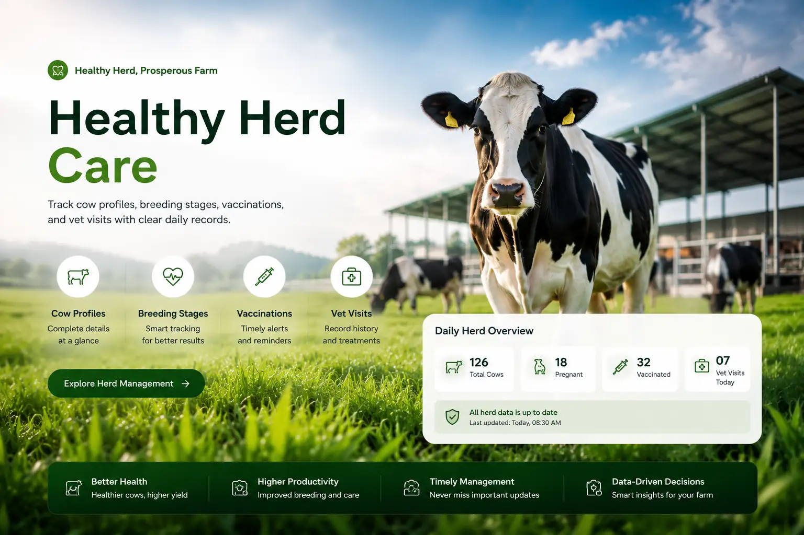
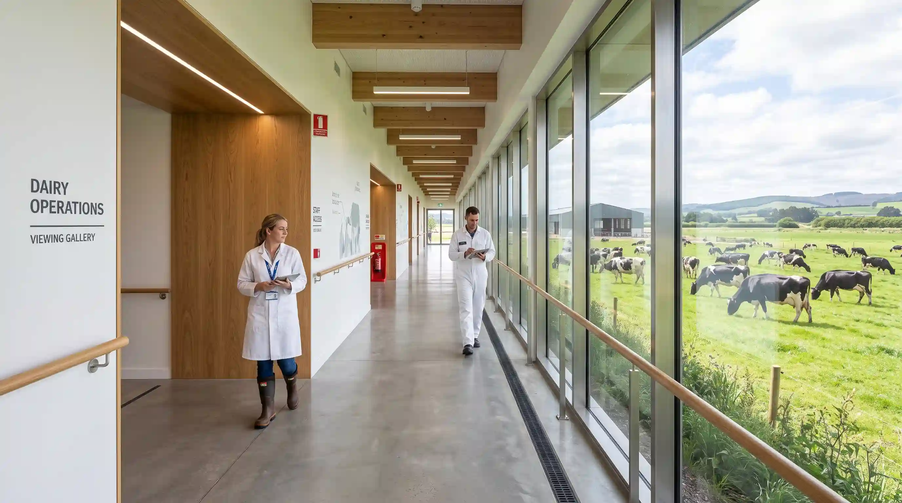
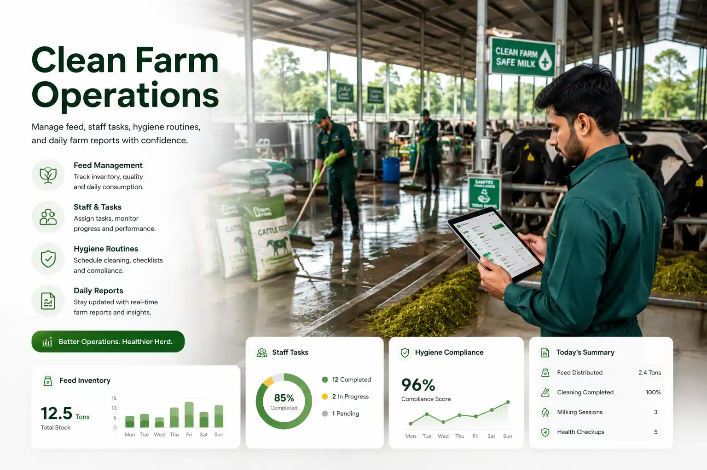

Mission
Raise dairy management standards through welfare-first operations and reliable production visibility.


About Stackly
We help premium dairy operations grow with transparent records, disciplined care, and calmer decisions.
Company story
Stackly began as a family dairy and matured into an enterprise operation focused on clean production, ethical livestock care, and clear performance reporting. Our website experience reflects that operating discipline.

Raise dairy management standards through welfare-first operations and reliable production visibility.

Become the benchmark for premium, traceable, and sustainable dairy farm management.

Animal care, clean milk, team accountability, honest reporting, and long-term land stewardship.

Our journey
Started with a small herd and a commitment to careful daily records.
Milk testing and batch traceability became part of daily operations.
Health, breeding, feed, and production data moved into one workflow.
Management now connects livestock, employees, reports, and quality controls.
cattle managed
trained employees
quality checks daily
batch compliance